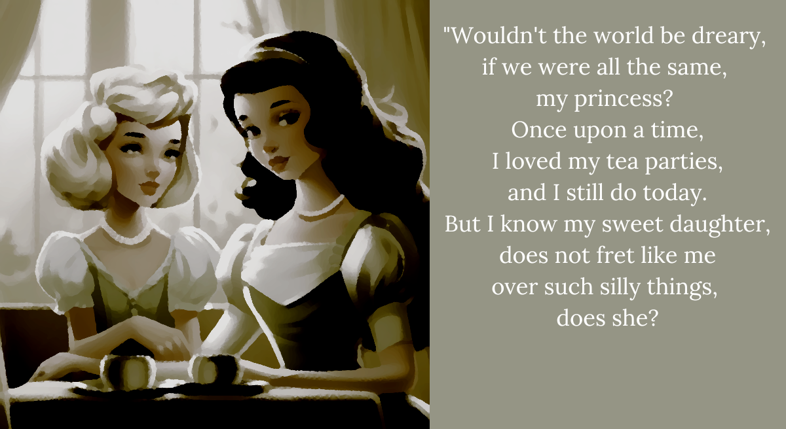

The queen was never quite like the princess AAA2
“Oh, but one day just like me,
you’ll have to debut, won’t you?
Will you smile for me then?
Even if it isn’t easy?
Just as I smile for you now,
even when it isn’t easy,” said the queen.
“Of course, mother.
I’ll always smile for you,” the princess said,
though she wasn’t smiling inside,
as the words her mother just said,
didn’t feel quite right.
And so it came to be,
that one day the little princess
was not so little anymore.
She had debuted in high society,
and she was of marriageable age.
Many courageous men and women,
have tried, tried, tried again.
But our princess could only
wait, wait, wait and see.
Finally, the day of betrothment came,
and she did as any sane girl would…
“She poisoned him,” Shiori says.
“Right, the princess poisoned the duke. I don’t know. Should she? Wait, did he do anything wrong?” I agree with her, but I don’t. But maybe I do.
“You want to poison the entire kingdom instead? That seems immensely more difficult. Rather, it’s his head or hers.”
“Hold your apothecary, Locusta. We can just run away. It’s simple and clean.”
“We can’t. The whole frickin’ kingdom hates her! ‘Ohh, look at the mean princess who does bad things like keeping to herself and bothering no one!’ They barely need an excuse to screw her over. You think they’ll let her run away?”
“Hey genius, how would poisoning someone make that situation any better?”
“She should at least get something out of it!”
“The prince isn’t even involved! He’s literally the one guy not messing with her!”
“Then let’s poison the whole kingdom! Actually! Actually! I do believe we should do that! If we’re gonna poison anyone, let’s just poison everyone.”
This is really stupid but, I’m starting to think that poisoning everyone is a good idea. The princess should…